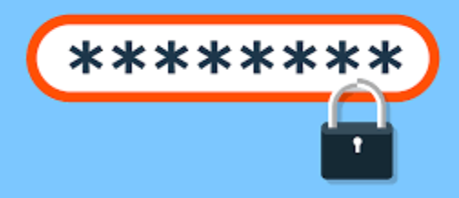
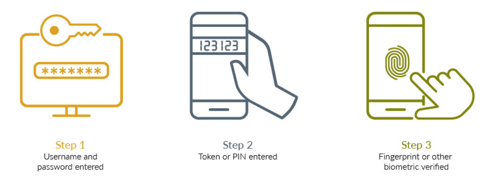

Password Management
Creating an account on any platform can bring users access to more content. Whether we want to post or keep track of our own content, or access other content online, it is almost necessary to create your own account. Now creating an account is simple enough, being about to keep your account safe can be a different story.
Making sure to keep your passwords safe is essential to having secure accounts. So having good security precautions are a great way to keep your passwords safe. Starting off with the basics, don’t share your passwords with anyone. Some platforms will mention that they will never ask you for your passwords, so even if an email looks legitimate from a platform you should still be cautious. Another way to keep your passwords safe is to make a complex password. Mixing up your passwords can be a simple way to add security to your passwords. Adding special characters, capitalising letters, adding numbers, are ways that can make it difficult for outsiders to guess your passwords.
Even if your passwords get breached, some websites provide their users with another way of keeping your account safe. Multi-factor authentication is another way to verify that the user logging onto their account is the correct person. Multiple steps can be taken to authenticate the login. Sending a verification code to your email or phone, answering security questions only you should know, asking for your fingerprint if on a mobile device, can all be factors to authenticate your login. A verification code also alerts you that your account has been breached if you receive the code when you don’t expect it. A good indication to change your password into something more complex.
Sometimes we can forget those complex passwords as well, so being able to keep track and remembering your passwords is important too. Sometimes something as simple as writing your password on a piece of paper is all you need to keep your passwords safe. Password managers are another way to keep your passwords safe. Password managers can help create and remember complex passwords for you. Google has a built-in password manager to help remember your passwords, but you should still be cautious since other people can see your passwords too, so logging out of your google account will help keep your passwords safe too.